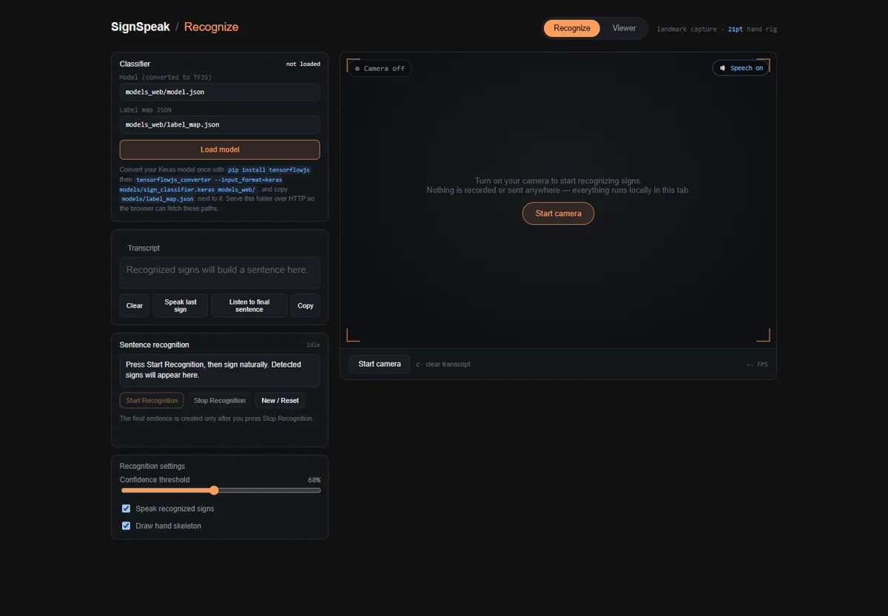

01 / Computer vision · Accessible learning
SignSpeak.
Bringing sign recognition, speech, and an articulated 3D hand into one learning experience.
- Status
- Competition prototype
- Context
- Team Quantum-X · Data Odyssey finalist
- Technology
- Python · TensorFlow · MediaPipe · JavaScript · Three.js

01 / OVERVIEW
The problem
Learning a sign involves both understanding its movement and getting useful feedback when practicing it. A static word list cannot provide that interaction.
The approach
SignSpeak connects webcam landmark tracking with a sign vocabulary, speech output, and a browser-based 3D hand viewer. The Python pipeline supports collecting sequences, training an LSTM classifier, and evaluating recognition.
My contribution
Team contributor: sign recognition, model training and testing, vocabulary expansion, web development, 3D visualization, and deployment.
02 / SYSTEM FLOW
How it connects
- 01Webcam input
- 02MediaPipe landmarks
- 03Sequence recognition
- 04Text + speech / 3D viewer
A simplified overview of the implementation.
03 / ENGINEERING
Inside the implementation
- Webcam-based hand landmark tracking and vocabulary matching.
- Two-layer LSTM training pipeline for temporal gesture sequences.
- Articulated hand visualization and speech feedback.
- Separate scripts for dataset auditing, collection, training, and evaluation.
The engineering consideration
Gesture recognition depends on sequences, not just individual frames. The training code uses temporal landmark features and regularization; the browser also has a built-in landmark matcher.
04 / SCOPE & STATUS
What this work demonstrates
The browser landmark matcher and Python classifier are separate paths. Using the trained classifier in the browser requires a TensorFlow.js conversion. This is a learning prototype; recognition accuracy is not presented as a verified production metric.